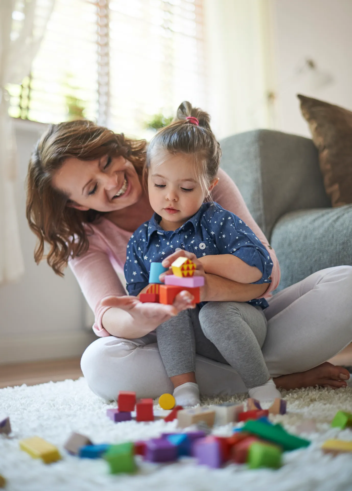

Blog da AMABA
Histórias que aproximam. Informação que acolhe.
Leia as notícias e acompanhe as campanhas da nossa associação. Um espaço para conhecer e fortalecer a rede de cuidado em Balsas.

Nossa rede em movimento
Acompanhe de perto.
Encontre um assunto ou explore as notícias publicadas pela AMABA. Para encontros e atividades, consulte nossa agenda.
Carregando publicações...
Novas histórias em breve
Nenhuma publicação por enquanto.
As notícias e os eventos serão apresentados aqui quando publicados pela AMABA.
Fale com a AMABA